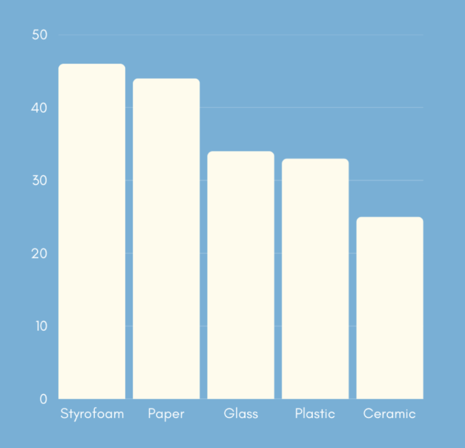

Bar Graph:
We found out that our hypothesis was correct because we hypothesized that the styrofoam cup would keep the water hot the longest, and it did so with a time of 46 minutes, 23 seconds, and 09 milliseconds, 2 minutes ahead of the second best, which was paper with a time of 44 minutes, 04 seconds, and 03 milliseconds. We were surprised, however, at the paper cup being in second place, and the ceramic cup being in last place, because we predicted that since the paper cup was the thinnest out of all the cups, tied with plastic, the amount of heat loss would be greater than the thickest ceramic cup. After some research, we found out that this was because ceramic, while thick, is a better heat conductor than paper or styrofoam, which meant the heat escaped quicker.